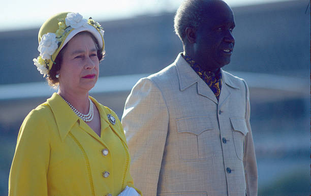

Dr. Kenneth Kaunda
in

Dr. Kenneth Kaunda, the first President of Zambia, alongside her Majesty Queen Elizabeth the second.
Dr. Kenneth Kaunda was a prominent political leader and the first President of Zambia This tribute page celebrates his life, contributions, and impact on the history of Zambia.